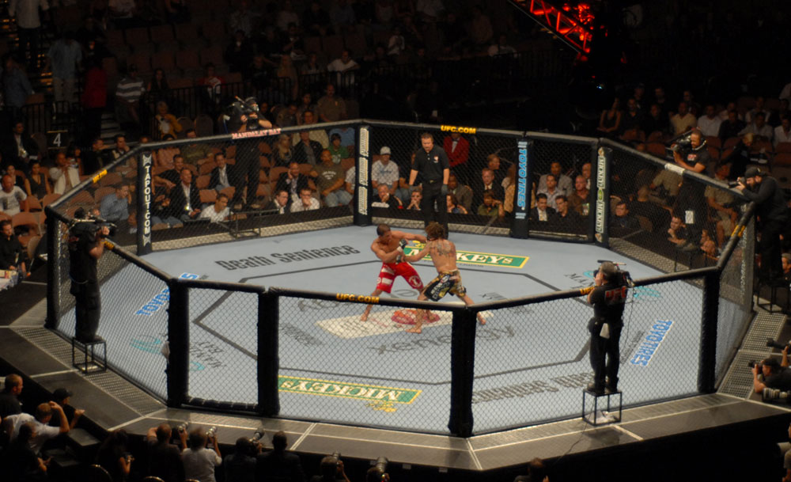
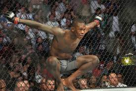

 
Artes Marciales Mixtas y su Popularidad
Las Artes Marciales Mixtas (MMA) han experimentado un gran ascenso en cuanto a popularidad a nivel mundial
en las últimas décadas. Este deporte, que combina diversas disciplinas de combate como boxeo, jiu-jitsu,
muay thai y lucha, ha cautivado a audiencias de todos los rincones del planeta. La MMA se distingue por
su enfoque integral, donde los atletas pueden utilizar una amplia gama de técnicas tanto de golpeo como
de agarre para obtener la victoria. La emoción y la imprevisibilidad de cada enfrentamiento, sumadas a la
destreza atlética de los competidores, han convertido a las MMA en un fenómeno cultural. Con eventos de
renombre mundial y atletas icónicos que trascienden fronteras, las Artes Marciales Mixtas no solo son un
espectáculo deportivo, sino una manifestación de la diversidad y habilidad de los guerreros modernos.
¿Qué se puede destacar de este deporte?
Integración de disciplinas:
Las Artes Marciales Mixtas se destacan por su enfoque inclusivo, donde los atletas combinan habilidades
de diversas disciplinas de combate, como boxeo, jiu-jitsu, muay thai, lucha libre y más. Esta integración
permite a los competidores desarrollar un estilo único y versátil, adaptándose a diferentes situaciones dentro
del octágono.
Espectáculo y emoción:
La MMA ha ganado popularidad gracias a su capacidad para ofrecer emocionantes y vibrantes espectáculos
deportivos. Los combates suelen ser intensos y llenos de acción, con momentos de sorpresa y estrategia
que mantienen a los espectadores al borde de sus asientos. La imprevisibilidad de los resultados agrega
un elemento adicional de emoción, atrayendo a una audiencia diversa.
Auge global y estrellas internacionales:
La MMA ha logrado trascender fronteras, convirtiéndose en un fenómeno global. Con organizaciones líderes
como UFC (Ultimate Fighting Championship) como pioneras, el deporte ha creado estrellas internacionales
que atraen a seguidores de todo el mundo. Este alcance global ha contribuido significativamente a la difusión
de la cultura de las Artes Marciales Mixtas, consolidándola como una forma de entretenimiento y deporte
de alto perfil en distintas culturas.
Combates de MMA
Los combates de MMA pueden darse a nivel profesional y a nivel amateur. La reglamentación cambia en ambos niveles.
Por ejemplo, a nivel profesional es permitido utilizar los codos para generar daño, también se permite golpear con
las rodillas el rostro del contrincante, sin embargo, a nivel amateur estos dos puntos no son permitidos. Para un mayor
entendimiento, se anexa acontinuación un evento de MMA a nivel amateur llamado SBF X, se recomiendo ver la pelea entre
Johan Ángel vs Yerson Cujar (minuto 1:31:00). Igualmente, se anexa un combate de nivel profesional, evento
catalogado como uno de los más emblamáticas y más esperados en su momento por la afición de las MMA, llevado a cabo entre
Khabib Nurmagomedov vs Conor McGregor.
- SBF X. Johan Ángel vs Yerson Cujar
- Khabib Nurmagomedov vs Conor McGregor